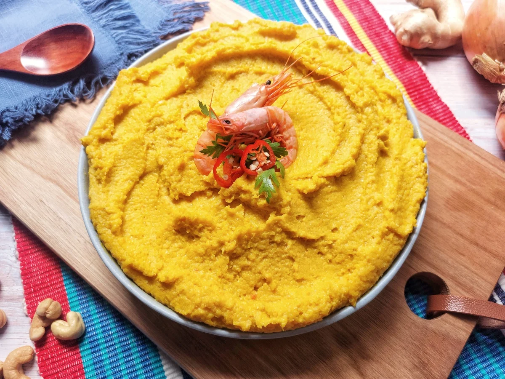

Vatapá

Description
Vatapá is a very popular Afro-Brazilian dish consisting of bread, shrimp, coconut milk, finely ground peanuts, and dendê oil blended into a smooth, creamy paste. It is a popular specialty from Salvador, Bahia, and is widely enjoyed throughout Brazil’s North and Northeast regions. In Bahia, vatapá is commonly served as a filling for acarajé.
Below we guide you step-by-step through a recipe to prepare this delicious dish.
Ingredients:
- 500 g of day-old French bread (preferably from the previous day)
- 2 cups of water
- 1 onion
- 1 tablespoon of grated ginger
- 1 cup of peeled dried shrimp
- ¾ cup of raw peeled peanut
- 1 cup of roasted cashews
- 1½ cups of coconut milk
- ¾ cup of dendê oil
- Salt to taste
Steps:
- On a cutting board, slice the bread and transfer it to a large bowl. Pour the 2 cups of water over the bread to soak.
- Meanwhile, peel and finely chop the onion. Peel and grate the ginger. Set aside.
- In a food processor or blender, grind the dried shrimp (reserve 3 or 4 for garnish) and transfer to a bowl.
- Using the same food processor or blender (no need to clean it), blend the peanuts and cashews with 1 cup of coconut milk. Transfer to another bowl.
- Still using the food processor or blender (no washing needed yet), add a portion of the soaked bread (without overfilling) and blend until smooth. Transfer to a bowl and repeat with the remaining bread.
- In a large pot, heat the palm oil over medium heat – reserve 1 tablespoon for finishing. Once hot, sauté the onion and ground dried shrimp, stirring frequently. After about 5 minutes, when the onion softens, add the bread paste and mix well.
- Add the nut mixture, grated ginger, fish stock, and the remaining coconut milk. Stir constantly until the mixture thickens and starts pulling away from the bottom of the pot. If it thickens too much, add a bit of boiling water. Taste and adjust salt as needed. The texture should be creamy.
- Transfer the vatapá to a serving dish, drizzle with the reserved tablespoon of palm oil, and garnish with fresh cilantro leaves and the reserved shrimp. Serve with rice, farofa de dendê (toasted cassava flour with palm oil), or acarajé.